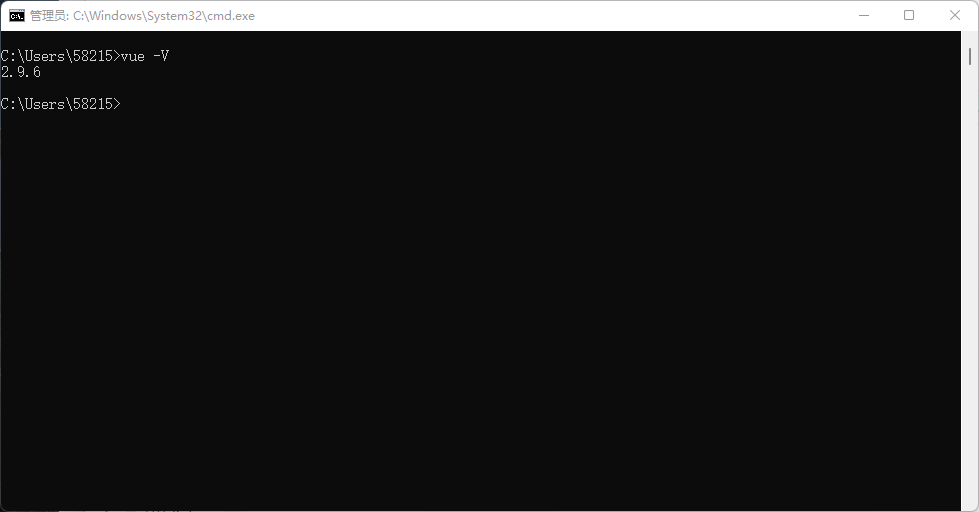

vue框架大总结
Vue (发音为 /vjuː/，类似 view) 是一款用于构建用户界面的 JavaScript 框架。它基于标准 HTML、CSS 和 JavaScript 构建，并提供了一套声明式的、组件化的编程模型，帮助你高效地开发用户界面。无论是简单还是复杂的界面，Vue 都可以胜任。
MVVM
MVVM是Model-View-ViewModel的简写。它本质上就是MVC 的改进版。MVVM 就是将其中的View 的状态和行为抽象化，让我们将视图 UI 和业务逻辑分开。
当然这些事 ViewModel 已经帮我们做了，它可以取出 Model 的数据同时帮忙处理 View 中由于需要展示内容而涉及的业务逻辑。微软的WPF带来了新的技术体验，如Silverlight、音频、视频、3D、动画……，这导致了软件UI层更加细节化、可定制化。同时，在技术层面，WPF也带来了 诸如Binding、Dependency Property、Routed Events、Command、DataTemplate、ControlTemplate等新特性。
MVVM（Model-View-ViewModel）框架的由来便是MVP（Model-View-Presenter）模式与WPF结合的应用方式时发展演变过来的一种新型架构框架。它立足于原有MVP框架并且把WPF的新特性糅合进去，以应对客户日益复杂的需求变化。
model模型
指的是后端传过来的数据。
view视图
指的是所有看到的页面，可以理解为将数据以某种方式呈现给用户。
ViewModel
指的是视图模型，他是连接view和model的桥梁。
MVVM模式和MVC模式一样，主要目的是分离视图（View）和模型（Model），有几大优点
1. 低耦合。视图（View）可以独立于Model变化和修改，一个ViewModel可以绑定到不同的”View”上，当View变化的时候Model可以不变，当Model变化的时候View也可以不变。
2. 可重用性。你可以把一些视图逻辑放在一个ViewModel里面，让很多view重用这段视图逻辑。
3. 独立开发。开发人员可以专注于业务逻辑和数据的开发（ViewModel），设计人员可以专注于页面设计，使用Expression Blend可以很容易设计界面并生成xaml代码。
4. 可测试。界面素来是比较难于测试的，测试可以针对ViewModel来写。
Node.js的部署
Ubuntu
用以下命令安装node.js
sudo apt install nodejs用以下命令安装npm
sudo apt install npm完毕后打开终端，输入node -v和npm -v检查配置是否正常
Windows
下载地址：Node.js (nodejs.org)
进入网址，下载压缩包版本的包
下载完成后，解压，注意记住路径，例子为D:\environment\node-v14.9.0-win-x64\
配置环境变量，将node.js的路径复制进去即可，紧接着打开cmd，输入node -v和npm -v检查配置是否正常，若配置成功输入以上命令没有反应，重启电脑即可
设置node_global和node_cache，在命令行中输入以下两条命令
npm config set prefix "D:\environment\node-v14.9.0-win-x64\node_global"
npm config set cache "D:\environment\node-v14.9.0-win-x64\node_cache"配置镜像，输入以下命令
npm config set registry=http://registry.npm.taobao.org通过npm config list即可检查所有的配置信息
Vue、Vue-cli的配置
输入以下命令安装
npm install vue -g
npm install @vue/cli -g安装完毕，需要配置global的环境变量，上面我们已经配置好prefix了，根据prefix中的node_global路径配置即可，完成后，所有的环境变量如图
打开cmd，输入vue -V检查配置是否正常，若配置成功输入以上命令没有反应，重启电脑即可

至此，全部环境部署成功
本博客所有文章除特别声明外，均采用 CC BY-SA 4.0 协议 ，转载请注明出处！